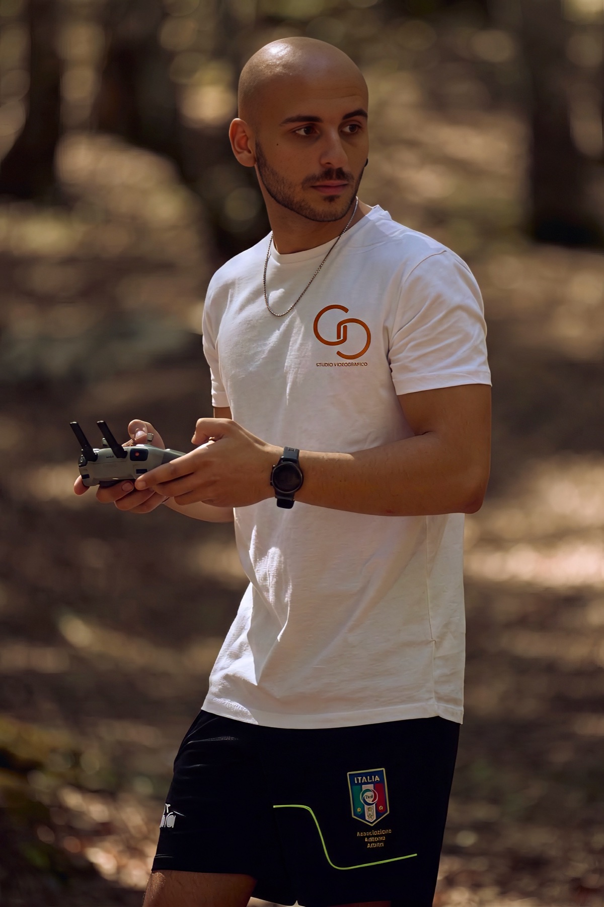
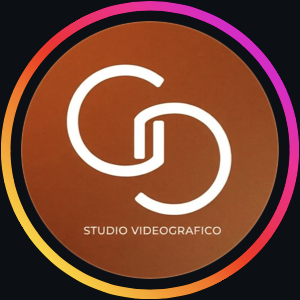

EMOZIONE
Le emozioni di un momento.
Ci sono attimi che passano in un secondo e meritano di essere rivissuti.
Storie visive ad alto impatto
Trasformiamo la tua visione in storie che conquistano il pubblico e le raccontiamo attraverso website e social.
Un video può mostrare molto.
Per questo non mi basta registrare quello che accade. Cerco il dettaglio che lo rende tuo: un gesto, un’attesa, uno sguardo che dice tutto senza bisogno di parole.
Da sei anni realizzo video per eventi, attività e brand: dal concept alle riprese, fino al montaggio e ai formati per social e website. Ogni progetto mostra cosa lo rende diverso, coinvolge il suo pubblico e lo aiuta a farsi scegliere.
Scopri i servizi ↘
06ANNI DI ESPERIENZANon solo la giornata. Le persone, l’attesa, quello che vorrai ricordare.
Ci sono attimi che passano in un secondo e meritano di essere rivissuti.
Ogni progetto ha una personalità. Immagini, suono e ritmo la rendono riconoscibile.
Contenuti che fermano lo sguardo e invitano a conoscere.
Un racconto pronto a vivere tra website, social e campagne.
Un buon video non comincia con REC. Comincia capendo cosa vuoi lasciare a chi lo guarda.
Il tuo progetto, il tuo pubblico, quello che vuoi far provare. Mettiamo a fuoco il cuore della storia prima di pensare alle inquadrature.
Costruiamo un’identità visiva coerente: luce, movimento, suono e montaggio diventano parte dello stesso racconto.
Consegniamo contenuti pronti a vivere sui canali giusti: un film principale e formati pensati per website, social e campagne.
Contenuti belli da vedere, costruiti per creare connessione e aiutare il tuo progetto a farsi scegliere.
Il ritmo, le persone, i momenti che meritano di restare. Un film che ti riporta lì.
Parliamo del tuo evento ↗Spot e contenuti social per raccontare cosa fai, cosa ti distingue e perché sceglierti.
Diamo forma alla tua idea ↗Kickstarter, videoclip e campagne: una storia chiara, dall’idea alla diffusione.
Raccontami il progetto ↗Ogni progetto nasce da una domanda: che cosa vogliamo far provare? Da lì costruiamo immagini, suono e montaggio.
La differenza è in quello che riesce a far arrivare.
Costruiamo il tuo racconto ↗DIETRO LE IMMAGINI, CI SONO LE STORIE.
Dal backstage al montaggio finale: seguimi per scoprire da vicino i progetti, i set e le storie che prendono forma.
Seguimi su Instagram